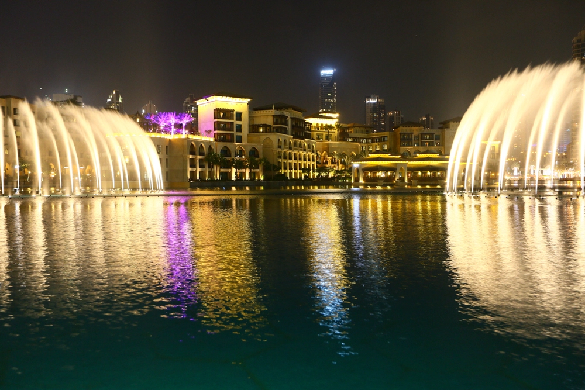

VIAJEM AO MUNDO

Embarquei em uma jornada inesquecível ao redor do mundo, cruzando continentes, culturas e paisagens únicas.
Comecei na Europa, explorando a história viva de Roma, os canais de Veneza e as luzes de Paris.
Atravessei para a Ásia, onde me encantei com os templos do Japão, as ruas agitadas de Bangkok e os sabores exóticos da Índia.
PONTOS TURISTICOS:
1.Coliseu, Roma (Itália)
Durante minha viagem a Roma, um dos pontos altos foi a visita ao Coliseu, símbolo imponente da grandiosidade do Império Romano.
Ao me aproximar da estrutura, fui imediatamente impressionado pela sua magnitude e pela aura histórica que envolve o lugar.

2.Casa de Anne Frank, Amsterdã (Holanda)
Visitar a Casa de Anne Frank foi uma experiência profundamente emocionante e reflexiva.
Localizada em Amsterdã, essa casa/esconderijo preserva a memória de Anne Frank,
a jovem judia que escreveu um diário enquanto se escondia com sua família durante a ocupação nazista na Segunda Guerra Mundial.
3.Fontes de Dubai, Dubai (Emirados Árabes) ...
Assistir ao espetáculo das Fontes de Dubai foi uma experiência mágica e hipnotizante. Localizadas ao lado do imponente Burj Khalifa e do luxuoso Dubai Mall,
as fontes dançantes são uma das atrações mais famosas da cidade — e com razão.
